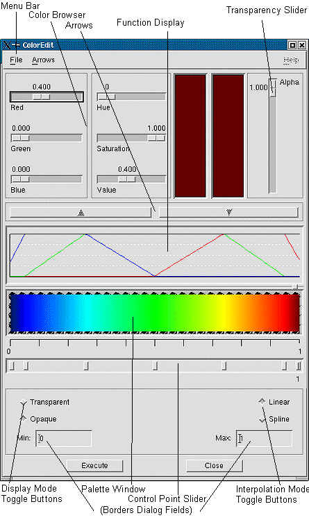

ColorMapEditor
The ColorMap Editor Panel pops up with
the ColorEdit module.
It contains the facilities to load, edit,
and save a colormap.
Use this description together with the
editor panel. If you need a more information use the more detailed description
of the ColorMapEditor in the module documentation of ColorEdit.
The ColorMap Editor Panel (see figure
below) consists out of the following parts
-
Menu Bar
-
Color Browser and Transparency Slider (together
with Arrows)
-
Function Display (information only)
-
Palette Window and Control Point Slider
-
Toggle Buttons and Border Dialog Fields
(Display and Interpolation Mode / Min
and Max)
The central parts for editing are the Palette
Window with the Control Point Slider and the Color Browser
(together with the Transparency Slider):
The Palette Window contains a true color
image of the colormap.
Your main tools are the Control Points,
the Color Browser and the Transparency Slider. (Arrows see description
of menu bar below)

You can
-
select a control point (with the left
mouse button, black line indicates 'selected') on the control point slider
to choose where you want to edit the colormap.
Color:
Use the RGB or HSV sliders of the color
browser to edit the color at the selected point, and preview the result
in the rectangle right of the sliders.
Transparency/Opacity:
Use the transparency slider to select
the degree of transparency (alpha=0, totally opaque and alpha=1,
totally transparent), and preview the result in the rectangle left of the
slider.
Color and transparency values between
controlpoints are interpolated.
-
squeeze resp. stretch the colormap
by moving a control point with the right mouse button
-
move a control point without modification
of the colormap with the left mouse button
-
create a new control point by clicking
with the middle mouse button on an empty area of the slider (controlpoint
is automatically selected).
-
delete a control point by clicking
on it with the middle mouse button
The Function Display is for information
only, and shows the interpolated curves for the four values, i. e. red,
green, and blue in the corresponding color, and opacity in black.
The Display Mode Toggle Buttons
let you switch between opaque and transparency display of the colormap,
but does not change the colormap itself.
The Interpolation Mode Toggle Buttons
let
you switch between linear and spline interpolation (check in the function
display).
The Borders Dialog Fields had been
designed to adjust the Min and Max values (default 0 and 1) - obsolete,
use parameters in ControlPanel instead!
The Menu Bar offers three submenus
| File |
New |
The old colormap is deleted and a new
one created (opaque and with 7 controlpoints, interpolation mode linear,
borders 0 and 1) |
| Open |
After you have selected a colormap file
via an Open File dialog and pushing OK a new colormap is loaded; the old
colormap will be lost |
| Save |
A dialog box pops up and lets you write
the filename for saving the actual colormap |
| Drag Mode |
Auto-Apply |
dragging the sliders is effective immediately
(default) |
| ButtonUp-Apply |
dragging becomes effective if you release
the mouse button (choose if performance is low) |
| Arrows |
Off |
Color browser and actual controlpoint
linked: automatic update of control point with color browser |
| On |
Color browser and actual control point
unlinked: manual update via arrows |